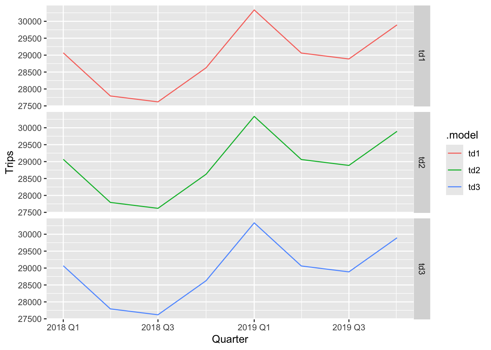

Chapter 11 Forecasting hierarchical and grouped time series
# loading libraries
library(tsibble)
library(tsibbledata)
library(tidyverse)
# to read data
library(rio)
library(ggplot2)
library(fabletools)
library(feasts)
library(fpp3)
library(latex2exp)
library(forecast)11.1 Hierarchical and grouped time series
11.1.1 Hierarchical time series

A two level hierarchical tree diagram.
$$ y_t = y_{AA,t} + y_{AB,t} + y_{AC,t} + y_{BA,t} + y_{BB,t}\ y_{A,t} = y_{AA,t} + y_{AB,t} + y_{AC,t},y_{B,t}=y_{BA,t} + y_{BB,t}\
So, y_t =y_{A,t} +y_{B,t} $$
11.1.2 Example: Australian tourism hierarchy

Australian states and tourism regions
tourism <- tsibble::tourism |>
mutate(State = recode(State,
`New South Wales` = "NSW",
`Northern Territory` = "NT",
`Queensland` = "QLD",
`South Australia` = "SA",
`Tasmania` = "TAS",
`Victoria` = "VIC",
`Western Australia` = "WA"
))## # A tsibble: 6,800 x 4 [1Q]
## # Key: State, Region [85]
## Quarter State Region Trips
## <qtr> <chr*> <chr*> <dbl>
## 1 1998 Q1 <aggregated> <aggregated> 23182.
## 2 1998 Q2 <aggregated> <aggregated> 20323.
## 3 1998 Q3 <aggregated> <aggregated> 19827.
## 4 1998 Q4 <aggregated> <aggregated> 20830.
## 5 1999 Q1 <aggregated> <aggregated> 22087.
## 6 1999 Q2 <aggregated> <aggregated> 21458.
## 7 1999 Q3 <aggregated> <aggregated> 19914.
## 8 1999 Q4 <aggregated> <aggregated> 20028.
## 9 2000 Q1 <aggregated> <aggregated> 22339.
## 10 2000 Q2 <aggregated> <aggregated> 19941.
## # ℹ 6,790 more rowstourism_hts |>
filter(is_aggregated(Region)) |>
autoplot(Trips) +
labs(y = "Trips ('000)",
title = "Australian tourism: national and states") +
facet_wrap(vars(State), scales = "free_y", ncol = 3) +
theme(legend.position = "none")tourism_hts |>
filter(State %in% c("NT", "QLD", "TAS", "VIC"), is_aggregated(Region)) |>
select(-Region) |>
mutate(State = factor(State, levels=c("QLD","VIC","NT","TAS"))) |>
gg_season(Trips) +
facet_wrap(vars(State), nrow = 2, scales = "free_y")+
labs(y = "Trips ('000)")
11.1.3 Grouped time series

Alternative representations of a two level grouped structure
\[ y_t = y_{AX,t} + y_{AY,t} + y_{BX,t} + y_{BY,t}\\ y_{A,t} = y_{AX,t} + y_{AY,t},\space \space y_{B,t}=y_{BX,t} + y_{BY,t}\\ y_{X,t} = y_{AX,t} + y_{AY,t},\space \space y_{Y,t}=y_{BX,t} + y_{BY,t} \]
11.1.4 Example: Australian prison population
prison <- readr::read_csv("https://OTexts.com/fpp3/extrafiles/prison_population.csv") |>
mutate(Quarter = yearquarter(Date)) |>
select(-Date) |>
as_tsibble(key = c(Gender, Legal, State, Indigenous),
index = Quarter) |>
relocate(Quarter)## Rows: 3072 Columns: 6
## ── Column specification ─────────────────────────────────────────────────────────────────────────────────────────────────────────────────────────────────────────────────
## Delimiter: ","
## chr (4): State, Gender, Legal, Indigenous
## dbl (1): Count
## date (1): Date
##
## ℹ Use `spec()` to retrieve the full column specification for this data.
## ℹ Specify the column types or set `show_col_types = FALSE` to quiet this message.prison_gts <- prison |>
aggregate_key(Gender * Legal * State, Count = sum(Count)/1e3)
prison_gts |>
filter(!is_aggregated(Gender), is_aggregated(Legal),
is_aggregated(State)) |>
autoplot(Count) +
labs(y = "Number of prisoners ('000)")prison_gts |>
filter(!is_aggregated(Gender), !is_aggregated(Legal),
!is_aggregated(State)) |>
mutate(Gender = as.character(Gender)) |>
ggplot(aes(x = Quarter, y = Count,
group = Gender, colour=Gender)) +
stat_summary(fun = sum, geom = "line") +
labs(title = "Prison population by state and gender",
y = "Number of prisoners ('000)") +
facet_wrap(~ as.character(State),
nrow = 1, scales = "free_y") +
theme(axis.text.x = element_text(angle = 90, hjust = 1))11.1.5 Mixed hierarchical and grouped structure
tourism_full |>
filter(!is_aggregated(Purpose), is_aggregated(State), is_aggregated(Region)) |>
ggplot(aes(x = Quarter, y = Trips, color = factor(Purpose))) +
stat_summary(fun = sum, geom = 'line') +
facet_wrap(~factor(Purpose), scales = 'free_y') +
guides(color = guide_legend(title = "Purpose")) tourism_full |>
filter(!is_aggregated(Purpose), !is_aggregated(State), !is_aggregated(Region)) |>
ggplot(aes(x = Quarter, y = Trips, color = factor(Purpose))) +
stat_summary(fun = sum, geom = 'line') +
facet_wrap(~State, nrow=2, scales = 'free_y') +
guides(color = guide_legend(title = "Purpose")) +
theme(axis.text.x = element_text(angle = 90, hjust = 1))11.2 Single level approaches
11.2.1 The bottom-up approach
This approach involves the following steps:
- Generating forecasts for each series at the bottom level
- Summing these forecasts to produce forecasts for all the series in the structure
A two level hierarchical tree diagram.
\[ \tilde{y}_{h} = \hat y_{AA,h} + \hat y_{AB,h} + \hat y_{AC,h} + \hat y_{BA,h} + \hat y_{BB,h}\\ \hat y_{A,h} = \hat y_{AA,h} + \hat y_{AB,h} + \hat y_{AC,h}\\ \hat y_{B,h} = \hat y_{BA,h} + \hat y_{BB,h} \]
11.2.1.1 Example: Generating bottom-up forecasts
tourism_state <- tourism |>
aggregate_key(State, Trips = sum(Trips))
fcasts_state <- tourism_state |>
filter(!is_aggregated(State)) |>
model(ets = ETS(Trips)) |>
forecast()
# Sum bottom level forecasts to get top-level forecasts
fcasts_national <- fcasts_state |>
summarise(value = sum(Trips), .mean = mean(value))
fcasts_national## # A tsibble: 8 x 3 [1Q]
## Quarter value .mean
## <qtr> <dist> <dbl>
## 1 2018 Q1 N(28925, 480068) 28925.
## 2 2018 Q2 N(26929, 509928) 26929.
## 3 2018 Q3 N(26267, 564670) 26267.
## 4 2018 Q4 N(27166, 7e+05) 27166.
## 5 2019 Q1 N(28991, 935854) 28991.
## 6 2019 Q2 N(26995, 894181) 26995.
## 7 2019 Q3 N(26333, 920929) 26333.
## 8 2019 Q4 N(27232, 1092272) 27232.The general approach:
## # A fable: 144 x 5 [1Q]
## # Key: State, .model [18]
## State .model Quarter Trips .mean
## <chr*> <chr> <qtr> <dist> <dbl>
## 1 ACT ets 2018 Q1 N(701, 7651) 701.
## 2 ACT ets 2018 Q2 N(717, 8032) 717.
## 3 ACT ets 2018 Q3 N(734, 8440) 734.
## 4 ACT ets 2018 Q4 N(750, 8882) 750.
## 5 ACT ets 2019 Q1 N(767, 9368) 767.
## 6 ACT ets 2019 Q2 N(784, 9905) 784.
## 7 ACT ets 2019 Q3 N(800, 10503) 800.
## 8 ACT ets 2019 Q4 N(817, 11171) 817.
## 9 ACT bu 2018 Q1 N(701, 7651) 701.
## 10 ACT bu 2018 Q2 N(717, 8032) 717.
## # ℹ 134 more rows11.2.1.2 Workflow for forecasting aggregation structures
- Begin with a tsibble object (here labelled data) containing the individual bottom-level series.
- Define in aggregate_key() the aggregation structure and build a tsibble object that also contains the aggregate series.
- Identify a model() for each series, at all levels of aggregation.
- Specify in reconcile() how the coherent forecasts are to be generated from the selected models.
- Use the forecast() function to generate forecasts for the whole aggregation structure.
11.2.2 Top-down approaches
- Generating forecastsfor the Total series.
- Disaggregating down the hierarchy.
A two level hierarchical tree diagram.
11.2.2.1 Average historical proportions
tourism_state |>
model(ets = ETS(Trips)) |>
reconcile(td = top_down(ets, method = "average_proportions")) |>
forecast()## # A fable: 144 x 5 [1Q]
## # Key: State, .model [18]
## State .model Quarter Trips .mean
## <chr*> <chr> <qtr> <dist> <dbl>
## 1 ACT ets 2018 Q1 N(701, 7651) 701.
## 2 ACT ets 2018 Q2 N(717, 8032) 717.
## 3 ACT ets 2018 Q3 N(734, 8440) 734.
## 4 ACT ets 2018 Q4 N(750, 8882) 750.
## 5 ACT ets 2019 Q1 N(767, 9368) 767.
## 6 ACT ets 2019 Q2 N(784, 9905) 784.
## 7 ACT ets 2019 Q3 N(800, 10503) 800.
## 8 ACT ets 2019 Q4 N(817, 11171) 817.
## 9 ACT td 2018 Q1 N(692, 397) 692.
## 10 ACT td 2018 Q2 N(662, 493) 662.
## # ℹ 134 more rows11.2.2.2 Proportions of the historical averages
tourism_state |>
model(ets = ETS(Trips)) |>
reconcile(td = top_down(ets, method = "proportion_averages")) |>
forecast()## # A fable: 144 x 5 [1Q]
## # Key: State, .model [18]
## State .model Quarter Trips .mean
## <chr*> <chr> <qtr> <dist> <dbl>
## 1 ACT ets 2018 Q1 N(701, 7651) 701.
## 2 ACT ets 2018 Q2 N(717, 8032) 717.
## 3 ACT ets 2018 Q3 N(734, 8440) 734.
## 4 ACT ets 2018 Q4 N(750, 8882) 750.
## 5 ACT ets 2019 Q1 N(767, 9368) 767.
## 6 ACT ets 2019 Q2 N(784, 9905) 784.
## 7 ACT ets 2019 Q3 N(800, 10503) 800.
## 8 ACT ets 2019 Q4 N(817, 11171) 817.
## 9 ACT td 2018 Q1 N(691, 396) 691.
## 10 ACT td 2018 Q2 N(661, 493) 661.
## # ℹ 134 more rows11.2.2.3 Forecast proportions
tourism_state |>
model(ets = ETS(Trips)) |>
reconcile(td = top_down(ets, method = "forecast_proportions")) |>
forecast()## # A fable: 144 x 5 [1Q]
## # Key: State, .model [18]
## State .model Quarter Trips .mean
## <chr*> <chr> <qtr> <dist> <dbl>
## 1 ACT ets 2018 Q1 N(701, 7651) 701.
## 2 ACT ets 2018 Q2 N(717, 8032) 717.
## 3 ACT ets 2018 Q3 N(734, 8440) 734.
## 4 ACT ets 2018 Q4 N(750, 8882) 750.
## 5 ACT ets 2019 Q1 N(767, 9368) 767.
## 6 ACT ets 2019 Q2 N(784, 9905) 784.
## 7 ACT ets 2019 Q3 N(800, 10503) 800.
## 8 ACT ets 2019 Q4 N(817, 11171) 817.
## 9 ACT td 2018 Q1 N(704, 411) 704.
## 10 ACT td 2018 Q2 N(740, 618) 740.
## # ℹ 134 more rowsfrcst_comp <- tourism_state |>
model(ets = ETS(Trips)) |>
reconcile(
td1 = top_down(ets, method = "average_proportions"),
td2 = top_down(ets, method = "proportion_averages"),
td3 = top_down(ets, method = "forecast_proportions")) |>
forecast()
frcst_comp |>
filter(is_aggregated(State), .model != 'ets') |>
autoplot(level = NULL) +
facet_grid(.model~.)
11.4 Forecasting Australian domestic tourism
tourism_full <- tourism |>
aggregate_key((State/Region) * Purpose, Trips = sum(Trips))
fit <- tourism_full |>
filter(year(Quarter) <= 2015) |>
model(base = ETS(Trips)) |>
reconcile(
bu = bottom_up(base),
ols = min_trace(base, method = "ols"),
mint = min_trace(base, method = "mint_shrink")
)
fc <- fit |> forecast(h = "2 years")fc |>
filter(is_aggregated(Region), is_aggregated(Purpose)) |>
autoplot(
tourism_full |> filter(year(Quarter) >= 2011),
level = NULL
) +
labs(y = "Trips ('000)") +
facet_wrap(vars(State), scales = "free_y")fc |>
filter(is_aggregated(State), !is_aggregated(Purpose)) |>
autoplot(
tourism_full |> filter(year(Quarter) >= 2011),
level = NULL
) +
labs(y = "Trips ('000)") +
facet_wrap(vars(Purpose), scales = "free_y")fc |>
filter(is_aggregated(State), is_aggregated(Purpose)) |>
accuracy(
data = tourism_full,
measures = list(rmse = RMSE, mase = MASE)
) |>
group_by(.model) |>
summarise(rmse = mean(rmse), mase = mean(mase))## # A tibble: 4 × 3
## .model rmse mase
## <chr> <dbl> <dbl>
## 1 base 1721. 1.53
## 2 bu 3071. 3.17
## 3 mint 2157. 2.09
## 4 ols 1804. 1.6311.6 Forecasting Australian prison population
prison <- readr::read_csv("https://OTexts.com/fpp3/extrafiles/prison_population.csv") |>
mutate(Quarter = yearquarter(Date)) |>
select(-Date) |>
as_tsibble(key = c(Gender, Legal, State, Indigenous),
index = Quarter) |>
relocate(Quarter)## Rows: 3072 Columns: 6
## ── Column specification ─────────────────────────────────────────────────────────────────────────────────────────────────────────────────────────────────────────────────
## Delimiter: ","
## chr (4): State, Gender, Legal, Indigenous
## dbl (1): Count
## date (1): Date
##
## ℹ Use `spec()` to retrieve the full column specification for this data.
## ℹ Specify the column types or set `show_col_types = FALSE` to quiet this message.prison_gts <- prison |>
aggregate_key(Gender * Legal * State, Count = sum(Count)/1e3)
fit <- prison_gts |>
filter(year(Quarter) <= 2014) |>
model(base = ETS(Count)) |>
reconcile(
bottom_up = bottom_up(base),
MinT = min_trace(base, method = "mint_shrink")
)
fc <- fit |> forecast(h = 8)fc |>
filter(is_aggregated(State), is_aggregated(Gender),
is_aggregated(Legal)) |>
autoplot(prison_gts, alpha = 0.7, level = 90) +
labs(y = "Number of prisoners ('000)",
title = "Australian prison population (total)")fc |>
filter(
.model %in% c("base", "MinT"),
!is_aggregated(State), is_aggregated(Legal),
is_aggregated(Gender)
) |>
autoplot(
prison_gts |> filter(year(Quarter) >= 2010),
alpha = 0.7, level = 90
) +
labs(title = "Prison population (by state)",
y = "Number of prisoners ('000)") +
facet_wrap(vars(State), scales = "free_y", ncol = 4) +
theme(axis.text.x = element_text(angle = 90, hjust = 1))fc |>
filter(is_aggregated(State), is_aggregated(Gender),
is_aggregated(Legal)) |>
accuracy(data = prison_gts,
measures = list(mase = MASE,
ss = skill_score(CRPS)
)
) |>
group_by(.model) |>
summarise(mase = mean(mase), sspc = mean(ss) * 100)## # A tibble: 3 × 3
## .model mase sspc
## <chr> <dbl> <dbl>
## 1 MinT 0.895 76.8
## 2 base 1.72 55.9
## 3 bottom_up 1.84 33.5